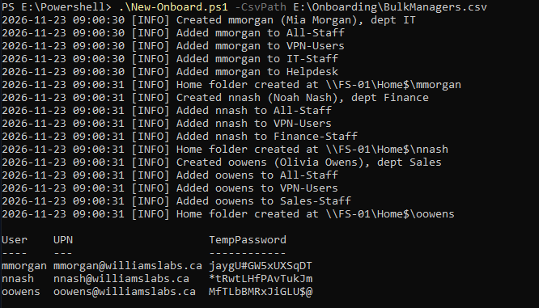
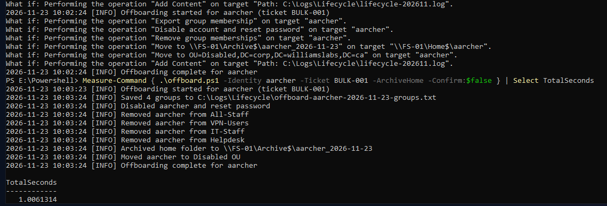
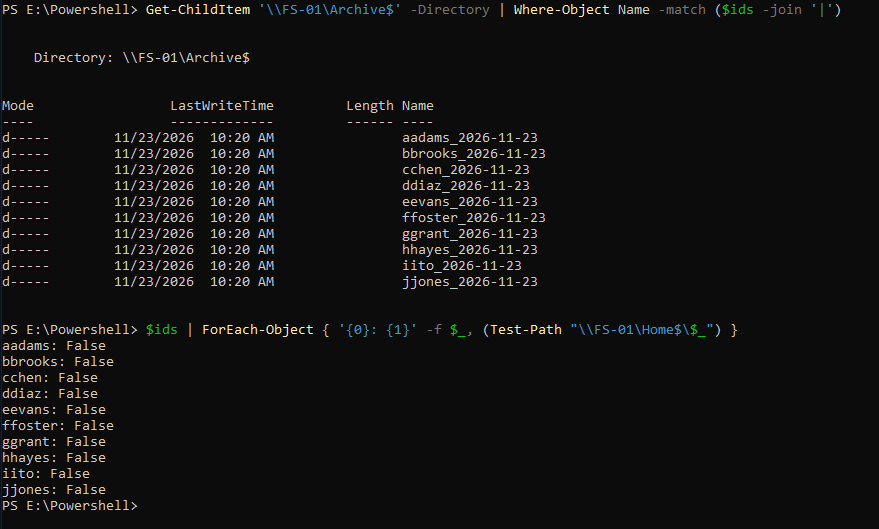
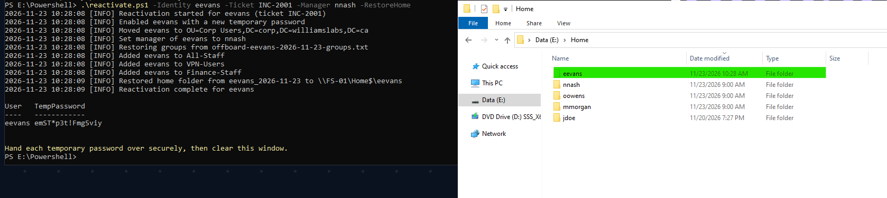

This runbook gives three self-contained PowerShell scripts for the full user lifecycle in Active Directory (with optional Microsoft 365 steps): New-Onboard.ps1 creates and provisions a user from a CSV row, and offboard.ps1 disables, strips and archives one, and reactivate.ps1 restores one who returns. Each file carries its own settings, logging and helper functions, so you can copy either one on its own. Both support -WhatIf, log every action to a file, and default to the corp.williamslabs.ca domain, so edit the settings block at the top of each script to match your environment.
Prerequisites
Install-WindowsFeature RSAT-AD-PowerShell on Server, or the RSAT optional feature on Windows 10/11).Microsoft.Graph module (Install-Module Microsoft.Graph -Scope CurrentUser) for licence assignment and revocation, and an Exchange Online connection for mailbox conversion.Safety notes
-WhatIf first, then on a throwaway account, before touching real users.Neither script needs another file. Edit the $Config settings block at the top of each one (domain, OUs, file shares, groups) before the first run; the onboarding script also needs a CSV.
Both scripts include built-in help. Run Get-Help .\New-Onboard.ps1 -Full or Get-Help .\offboard.ps1 -Examples to see the parameters and examples without opening the file.
Onboarding reads one row per new hire from E:\Onboarding\NewHires.csv:
FirstName,LastName,Department,Title,Manager,StartDate Jane,Doe,Finance,Accountant,bjones,2026-12-01
New-Onboard.ps1 creates each user from the CSV, adds baseline and department groups, builds a permissioned home folder, and optionally assigns a Microsoft 365 licence. It prints temporary passwords once at the end and never writes them to the log.
<#
.SYNOPSIS
Creates Active Directory users from a CSV file (self-contained onboarding).
.DESCRIPTION
For each CSV row this script creates the AD account with a unique username and a
random temporary password (change forced at first logon), sets the manager if it
exists, adds baseline and department groups, creates the user's private home folder
with Modify rights for that user only, and optionally assigns a Microsoft 365 licence.
Every action is written to the lifecycle log. Temporary passwords are shown once at
the end and are never logged. Edit the $Config block below before the first run.
.PARAMETER CsvPath
Path to the CSV file. Required columns: FirstName, LastName, Department, Title,
Manager, StartDate. Manager is a SamAccountName and may be blank or unknown.
.PARAMETER AssignLicense
Also assign the Microsoft 365 licence named in $Config.LicenseSku using Microsoft.Graph.
The account must already have synced to Entra ID, so this is often a second pass.
.EXAMPLE
.\New-Onboard.ps1 -CsvPath E:\Onboarding\NewHires.csv -WhatIf
Dry run: shows what would be created without changing anything.
.EXAMPLE
.\New-Onboard.ps1 -CsvPath E:\Onboarding\NewHires.csv
Creates the accounts, groups and home folders.
.EXAMPLE
.\New-Onboard.ps1 -CsvPath E:\Onboarding\NewHires.csv -AssignLicense
Creates the accounts and assigns the Microsoft 365 licence.
.NOTES
Supports the common -WhatIf and -Confirm parameters.
Log: C:\Logs\Lifecycle\lifecycle-yyyyMM.log
#>
#Requires -Modules ActiveDirectory
[CmdletBinding(SupportsShouldProcess)]
param(
[Parameter(Mandatory)][string]$CsvPath,
[switch]$AssignLicense
)
# ---------------- SETTINGS: edit for your environment ----------------
$Config = @{
Domain = 'corp.williamslabs.ca'
NetbiosName = 'CORP'
Server = 'AD-01.corp.williamslabs.ca' # pin the DC
UpnSuffix = 'williamslabs.ca'
UsersOU = 'OU=Corp Users,DC=corp,DC=williamslabs,DC=ca'
HomeRoot = '\\FS-01\Home$'
LogDir = 'C:\Logs\Lifecycle'
BaselineGroups = @('All-Staff', 'VPN-Users')
DeptGroups = @{ # Department -> extra security groups
'IT' = @('IT-Staff', 'Helpdesk')
'Finance' = @('Finance-Staff')
'Sales' = @('Sales-Staff')
}
LicenseSku = 'ENTERPRISEPACK' # Microsoft 365 SKU part number
}
# ---------------------------------------------------------------------
function Write-Log {
param(
[Parameter(Mandatory)][string]$Message,
[ValidateSet('INFO','WARN','ERROR')][string]$Level = 'INFO'
)
if (-not (Test-Path $Config.LogDir)) {
New-Item -ItemType Directory -Path $Config.LogDir -Force | Out-Null
}
$line = '{0:yyyy-MM-dd HH:mm:ss} [{1}] {2}' -f (Get-Date), $Level, $Message
Add-Content -Path (Join-Path $Config.LogDir "lifecycle-$(Get-Date -Format yyyyMM).log") -Value $line
switch ($Level) {
'WARN' { Write-Warning $Message }
'ERROR' { Write-Host $line -ForegroundColor Red }
default { Write-Host $line }
}
}
function New-RandomPassword {
param([ValidateRange(12, 128)][int]$Length = 16)
# Look-alike characters (l, I, O, 0, 1) are left out so passwords are easy to read out
$sets = @(
'abcdefghijkmnpqrstuvwxyz'
'ABCDEFGHJKLMNPQRSTUVWXYZ'
'23456789'
'!@#$%&*'
)
$all = $sets -join ''
$rng = [System.Security.Cryptography.RandomNumberGenerator]::Create()
# Unbiased random number from 0 to ($Max - 1), works in Windows PowerShell 5.1 and 7
function Get-RandomIndex([int]$Max) {
$bytes = New-Object byte[] 4
$limit = [uint32]::MaxValue - ([uint32]::MaxValue % $Max)
do { $rng.GetBytes($bytes); $n = [BitConverter]::ToUInt32($bytes, 0) } while ($n -ge $limit)
[int]($n % $Max)
}
try {
# One character from every set guarantees the domain's complexity rules
$chars = [System.Collections.Generic.List[char]]::new()
foreach ($set in $sets) { $chars.Add($set[(Get-RandomIndex $set.Length)]) }
while ($chars.Count -lt $Length) { $chars.Add($all[(Get-RandomIndex $all.Length)]) }
# Fisher-Yates shuffle so the guaranteed characters are not always first
for ($i = $chars.Count - 1; $i -gt 0; $i--) {
$j = Get-RandomIndex ($i + 1)
$chars[$i], $chars[$j] = $chars[$j], $chars[$i]
}
-join $chars
}
finally { $rng.Dispose() }
}
function Get-UniqueSam {
param([string]$First, [string]$Last)
$base = ($First.Substring(0,1) + $Last).ToLower() -replace '[^a-z0-9]', ''
$sam = $base; $i = 1
while (Get-ADUser -Filter "SamAccountName -eq '$sam'" -ErrorAction SilentlyContinue) {
$i++; $sam = "$base$i"
}
$sam
}
Import-Module ActiveDirectory -ErrorAction Stop
$PSDefaultParameterValues['*-AD*:Server'] = $Config.Server
if ($AssignLicense) {
Import-Module Microsoft.Graph.Users.Actions -ErrorAction Stop
Connect-MgGraph -Scopes 'User.ReadWrite.All','Organization.Read.All' -NoWelcome
$sku = Get-MgSubscribedSku | Where-Object SkuPartNumber -eq $Config.LicenseSku
if (-not $sku) { throw "Licence SKU '$($Config.LicenseSku)' not found." }
}
$results = foreach ($row in Import-Csv -Path $CsvPath) {
try {
$sam = Get-UniqueSam -First $row.FirstName -Last $row.LastName
$upn = "$sam@$($Config.UpnSuffix)"
$name = "$($row.FirstName) $($row.LastName)"
# Two people can share a name: make the AD object name unique, keep the display name
$cn = $name
$safe = $name.Replace("'", "''")
if (Get-ADUser -Filter "Name -eq '$safe'" -SearchBase $Config.UsersOU -SearchScope OneLevel -ErrorAction SilentlyContinue) {
$cn = "$name ($sam)"
}
$pw = New-RandomPassword
$params = @{
Name = $cn
GivenName = $row.FirstName
Surname = $row.LastName
DisplayName = $name
SamAccountName = $sam
UserPrincipalName = $upn
EmailAddress = $upn
Department = $row.Department
Title = $row.Title
Description = "$($row.Title) - start $($row.StartDate)"
Path = $Config.UsersOU
AccountPassword = (ConvertTo-SecureString $pw -AsPlainText -Force)
ChangePasswordAtLogon = $true
Enabled = $true
}
if ($row.Manager) {
$mgr = Get-ADUser -Filter "SamAccountName -eq '$($row.Manager)'"
if ($mgr) { $params.Manager = $mgr.DistinguishedName }
else { Write-Log "Manager '$($row.Manager)' not found for $sam, continuing without a manager" 'INFO' }
}
if ($PSCmdlet.ShouldProcess($sam, 'Create AD user')) {
try { New-ADUser @params }
catch {
# A rejected password can leave a disabled half-made account behind: remove it so a retry works
Get-ADUser -Filter "SamAccountName -eq '$sam'" -ErrorAction SilentlyContinue |
Remove-ADUser -Confirm:$false
throw
}
Write-Log "Created $sam ($name), dept $($row.Department)"
# Groups
$groups = @($Config.BaselineGroups) + @($Config.DeptGroups[$row.Department])
foreach ($g in $groups | Where-Object { $_ }) {
try {
Add-ADGroupMember -Identity $g -Members $sam
Write-Log "Added $sam to $g"
} catch { Write-Log "Group '$g' failed for ${sam}: $_" 'WARN' }
}
# Home folder with Modify rights for the user only
$homePath = Join-Path $Config.HomeRoot $sam
New-Item -ItemType Directory -Path $homePath -Force | Out-Null
$acl = Get-Acl $homePath
$rule = New-Object System.Security.AccessControl.FileSystemAccessRule(
"$($Config.NetbiosName)\$sam", 'Modify',
'ContainerInherit,ObjectInherit', 'None', 'Allow')
$acl.AddAccessRule($rule)
Set-Acl -Path $homePath -AclObject $acl
Set-ADUser -Identity $sam -HomeDirectory $homePath -HomeDrive 'H:'
Write-Log "Home folder created at $homePath"
# Optional Microsoft 365 licence (account must have synced to Entra ID first)
if ($AssignLicense) {
Set-MgUserLicense -UserId $upn `
-AddLicenses @{ SkuId = $sku.SkuId } -RemoveLicenses @() | Out-Null
Write-Log "Assigned $($Config.LicenseSku) to $upn"
}
}
[pscustomobject]@{ User = $sam; UPN = $upn; TempPassword = $pw }
}
catch {
Write-Log "Onboarding failed for $($row.FirstName) $($row.LastName): $_" 'ERROR'
}
}
$results | Format-Table -AutoSize
Write-Host 'Hand each temporary password over securely, then clear this window.' -ForegroundColor Yellow
Usage
.\New-Onboard.ps1 -CsvPath E:\Onboarding\NewHires.csv -WhatIf # dry run .\New-Onboard.ps1 -CsvPath E:\Onboarding\NewHires.csv # create accounts .\New-Onboard.ps1 -CsvPath E:\Onboarding\NewHires.csv -AssignLicense
The licence step only works after Entra Connect has synced the new user, so run -AssignLicense on a later pass if the account is not in the tenant yet.
Testing: one user, then ten
These test accounts are throwaway, so use the same dry run, real run and verify routine you used for jdoe. Create both CSV files first. The usernames come out as first initial plus last name (aarcher, bbrooks and so on), and the script adds a number if a name is already taken.
# Managers: one per department, created first $mgrs = @' FirstName,LastName,Department,Title,Manager,StartDate Mia,Morgan,IT,IT Manager,,2027-01-04 Noah,Nash,Finance,Finance Manager,,2027-01-04 Olivia,Owens,Sales,Sales Manager,,2027-01-04 '@ Set-Content -Path E:\Onboarding\BulkManagers.csv -Value $mgrs # Ten staff, each pointing at their department's manager $csv = @' FirstName,LastName,Department,Title,Manager,StartDate Amy,Adams,IT,Technician,mmorgan,2027-01-04 Ben,Brooks,Finance,Accountant,nnash,2027-01-04 Cara,Chen,Sales,Representative,oowens,2027-01-04 Dan,Diaz,IT,Analyst,mmorgan,2027-01-04 Eva,Evans,Finance,Clerk,nnash,2027-01-04 Finn,Foster,Sales,Representative,oowens,2027-01-04 Gina,Grant,IT,Technician,mmorgan,2027-01-04 Hugo,Hayes,Finance,Analyst,nnash,2027-01-04 Iris,Ito,Sales,Coordinator,oowens,2027-01-04 Jack,Jones,IT,Technician,mmorgan,2027-01-04 '@ Set-Content -Path E:\Onboarding\BulkTest10.csv -Value $csv # One separate person for the one-user test (not in the ten) $one = @' FirstName,LastName,Department,Title,Manager,StartDate Alice,Archer,IT,Technician,mmorgan,2027-01-04 '@ Set-Content -Path E:\Onboarding\BulkTest1.csv -Value $one
Step 1: Create the managers first
Three managers, one per department, are onboarded with the same script. They have to exist before the staff rows reference them, which also tests the manager lookup. Their usernames are mmorgan, nnash and oowens.
.\New-Onboard.ps1 -CsvPath E:\Onboarding\BulkManagers.csv -WhatIf .\New-Onboard.ps1 -CsvPath E:\Onboarding\BulkManagers.csv

Step 2: Onboard one user
.\New-Onboard.ps1 -CsvPath E:\Onboarding\BulkTest1.csv -WhatIf
Measure-Command { .\New-Onboard.ps1 -CsvPath E:\Onboarding\BulkTest1.csv | Out-Host } | Select-Object TotalSeconds
| Out-Host keeps the temporary password table on screen. Without it, Measure-Command swallows the script's output and you lose the passwords.
Step 3: Onboard ten users
.\New-Onboard.ps1 -CsvPath E:\Onboarding\BulkTest10.csv -WhatIf
Measure-Command { .\New-Onboard.ps1 -CsvPath E:\Onboarding\BulkTest10.csv | Out-Host } | Select-Object TotalSeconds
Verify
$ids = Import-Csv E:\Onboarding\BulkTest10.csv | ForEach-Object { ($_.FirstName.Substring(0,1) + $_.LastName).ToLower() }
# Expect 10 enabled accounts in Corp Users
Get-ADUser -Filter * -SearchBase 'OU=Corp Users,DC=corp,DC=williamslabs,DC=ca' -Properties Department |
Where-Object SamAccountName -in $ids | Select-Object SamAccountName, Department, Enabled
# Expect every staff member to show their department's manager
Get-ADUser -Filter * -SearchBase 'OU=Corp Users,DC=corp,DC=williamslabs,DC=ca' -Properties Manager |
Where-Object SamAccountName -in $ids |
Select-Object SamAccountName, @{n='Manager';e={ if ($_.Manager) { (Get-ADUser $_.Manager).SamAccountName } }}
# Expect 10 home folders, each with the user's own Modify entry
$ids | ForEach-Object { '{0}: {1}' -f $_, (Test-Path "\\FS-01\Home$\$_") }
icacls '\\FS-01\Home$\aadams'
# Expect 10 'Created' lines
Get-Content "C:\Logs\Lifecycle\lifecycle-$(Get-Date -Format yyyyMM).log" | Select-String 'Created '
Record the time for one user and for ten. If ten takes roughly ten times as long as one, the script is linear and safe to run on larger batches.
Offboard.ps1 locks a leaver out immediately and keeps everything needed to restore or audit the account. It saves the group list first, disables the account, scrambles the password, strips group membership, moves the object to the Disabled OU, and can archive the home folder and revoke Microsoft 365 access.
<#
.SYNOPSIS
Offboards one or more users in Active Directory (self-contained).
.DESCRIPTION
Locks a leaver out and preserves everything needed to restore or audit the account.
Steps in order: save the group list to a file, disable the account and reset it to a
random 32-character password, stamp the description with the date and ticket, remove
all groups except Domain Users, optionally archive the home folder, optionally revoke
Microsoft 365 sessions and licences, then move the account to the Disabled OU.
Nothing is deleted. Edit the $Config block below before the first run.
.PARAMETER Identity
One or more SamAccountNames, for example jdoe or jdoe,rroe.
.PARAMETER Ticket
Ticket or reference number recorded in the description and log. Default: N/A.
.PARAMETER ArchiveHome
Move the user's home folder to ArchiveRoot as <sam>_<date>.
.PARAMETER RevokeM365
Revoke Microsoft 365 sign-in sessions and remove licences using Microsoft.Graph.
.EXAMPLE
.\offboard.ps1 -Identity jdoe -Ticket INC-1042 -WhatIf
Dry run: shows every step without changing anything.
.EXAMPLE
.\offboard.ps1 -Identity jdoe -Ticket INC-1042 -ArchiveHome -RevokeM365
Full offboarding, prompting before each change.
.EXAMPLE
.\offboard.ps1 -Identity jdoe,rroe -Ticket INC-1050 -Confirm:$false
Offboards two users with no confirmation prompts.
.NOTES
ConfirmImpact is High, so each step prompts unless -Confirm:$false is used or you
answer Yes to All. Also supports -WhatIf.
Log: C:\Logs\Lifecycle\lifecycle-yyyyMM.log
Group backup: C:\Logs\Lifecycle\offboard-<sam>-<date>-groups.txt
#>
#Requires -Modules ActiveDirectory
[CmdletBinding(SupportsShouldProcess, ConfirmImpact = 'High')]
param(
[Parameter(Mandatory)][string[]]$Identity, # SamAccountName(s)
[string]$Ticket = 'N/A',
[switch]$ArchiveHome,
[switch]$RevokeM365
)
# ---------------- SETTINGS: edit for your environment ----------------
$Config = @{
Server = 'AD-01.corp.williamslabs.ca' # pin the DC
DisabledOU = 'OU=Disabled,DC=corp,DC=williamslabs,DC=ca'
ArchiveRoot = '\\FS-01\Archive$'
LogDir = 'C:\Logs\Lifecycle'
}
# ---------------------------------------------------------------------
function Write-Log {
param(
[Parameter(Mandatory)][string]$Message,
[ValidateSet('INFO','WARN','ERROR')][string]$Level = 'INFO'
)
if (-not (Test-Path $Config.LogDir)) {
New-Item -ItemType Directory -Path $Config.LogDir -Force | Out-Null
}
$line = '{0:yyyy-MM-dd HH:mm:ss} [{1}] {2}' -f (Get-Date), $Level, $Message
Add-Content -Path (Join-Path $Config.LogDir "lifecycle-$(Get-Date -Format yyyyMM).log") -Value $line
switch ($Level) {
'WARN' { Write-Warning $Message }
'ERROR' { Write-Host $line -ForegroundColor Red }
default { Write-Host $line }
}
}
function New-RandomPassword {
param([ValidateRange(12, 128)][int]$Length = 16)
# Look-alike characters (l, I, O, 0, 1) are left out so passwords are easy to read out
$sets = @(
'abcdefghijkmnpqrstuvwxyz'
'ABCDEFGHJKLMNPQRSTUVWXYZ'
'23456789'
'!@#$%&*'
)
$all = $sets -join ''
$rng = [System.Security.Cryptography.RandomNumberGenerator]::Create()
# Unbiased random number from 0 to ($Max - 1), works in Windows PowerShell 5.1 and 7
function Get-RandomIndex([int]$Max) {
$bytes = New-Object byte[] 4
$limit = [uint32]::MaxValue - ([uint32]::MaxValue % $Max)
do { $rng.GetBytes($bytes); $n = [BitConverter]::ToUInt32($bytes, 0) } while ($n -ge $limit)
[int]($n % $Max)
}
try {
# One character from every set guarantees the domain's complexity rules
$chars = [System.Collections.Generic.List[char]]::new()
foreach ($set in $sets) { $chars.Add($set[(Get-RandomIndex $set.Length)]) }
while ($chars.Count -lt $Length) { $chars.Add($all[(Get-RandomIndex $all.Length)]) }
# Fisher-Yates shuffle so the guaranteed characters are not always first
for ($i = $chars.Count - 1; $i -gt 0; $i--) {
$j = Get-RandomIndex ($i + 1)
$chars[$i], $chars[$j] = $chars[$j], $chars[$i]
}
-join $chars
}
finally { $rng.Dispose() }
}
Import-Module ActiveDirectory -ErrorAction Stop
$PSDefaultParameterValues['*-AD*:Server'] = $Config.Server
if ($RevokeM365) {
Import-Module Microsoft.Graph.Users, Microsoft.Graph.Users.Actions -ErrorAction Stop
Connect-MgGraph -Scopes 'User.ReadWrite.All' -NoWelcome
}
foreach ($sam in $Identity) {
try {
$user = Get-ADUser -Identity $sam -Properties MemberOf, Manager, HomeDirectory, Description, DirectReports
$stamp = Get-Date -Format 'yyyy-MM-dd'
Write-Log "Offboarding started for $sam (ticket $Ticket)"
if ($user.DirectReports) {
Write-Log "$sam still has direct reports: reassign them to a new manager." 'WARN'
}
# 1. Record group membership so access can be restored or audited
$groups = Get-ADPrincipalGroupMembership -Identity $user | Where-Object Name -ne 'Domain Users'
$groupFile = Join-Path $Config.LogDir "offboard-$sam-$stamp-groups.txt"
if ($PSCmdlet.ShouldProcess($sam, 'Export group membership')) {
$groups.Name | Set-Content -Path $groupFile
Write-Log "Saved $($groups.Count) groups to $groupFile"
}
# 2. Disable, scramble password, stamp description
if ($PSCmdlet.ShouldProcess($sam, 'Disable account and reset password')) {
Disable-ADAccount -Identity $user
Set-ADAccountPassword -Identity $user -Reset `
-NewPassword (ConvertTo-SecureString (New-RandomPassword 32) -AsPlainText -Force)
Set-ADUser -Identity $user `
-Description "Disabled $stamp - ticket $Ticket - was: $($user.Description)"
Write-Log "Disabled $sam and reset password"
}
# 3. Remove from all groups except Domain Users
if ($PSCmdlet.ShouldProcess($sam, 'Remove group memberships')) {
foreach ($g in $groups) {
Remove-ADGroupMember -Identity $g -Members $user -Confirm:$false
Write-Log "Removed $sam from $($g.Name)"
}
}
# 4. Archive the home folder
if ($ArchiveHome -and $user.HomeDirectory -and (Test-Path $user.HomeDirectory)) {
$dest = Join-Path $Config.ArchiveRoot "${sam}_$stamp"
if ($PSCmdlet.ShouldProcess($user.HomeDirectory, "Move to $dest")) {
Move-Item -Path $user.HomeDirectory -Destination $dest
Write-Log "Archived home folder to $dest"
}
}
# 5. Revoke Microsoft 365 sessions and licences
if ($RevokeM365) {
$upn = $user.UserPrincipalName
if ($PSCmdlet.ShouldProcess($upn, 'Revoke sign-in sessions and licences')) {
Revoke-MgUserSignInSession -UserId $upn | Out-Null
$skus = (Get-MgUserLicenseDetail -UserId $upn).SkuId
if ($skus) {
Set-MgUserLicense -UserId $upn -AddLicenses @() -RemoveLicenses $skus | Out-Null
}
Write-Log "Revoked sessions and removed $(@($skus).Count) licence(s) for $upn"
}
}
# 6. Move to the Disabled OU (last, so earlier steps can still find the object)
if ($PSCmdlet.ShouldProcess($sam, "Move to $($Config.DisabledOU)")) {
Move-ADObject -Identity $user.DistinguishedName -TargetPath $Config.DisabledOU
Write-Log "Moved $sam to Disabled OU"
}
Write-Log "Offboarding complete for $sam"
}
catch {
Write-Log "Offboarding failed for ${sam}: $_" 'ERROR'
}
}
Usage
.\offboard.ps1 -Identity jdoe -Ticket INC-1042 -WhatIf .\offboard.ps1 -Identity jdoe -Ticket INC-1042 -ArchiveHome -RevokeM365 .\offboard.ps1 -Identity jdoe,rroe -Ticket INC-1050 -Confirm:$false
The script does not delete anything. After your retention period (commonly 30 to 90 days), remove the account by hand: Remove-ADUser -Identity jdoe. Mailbox conversion to shared, forwarding and manager access to OneDrive are Exchange and Entra steps, so they sit on the checklist below instead of in the script.
Bulk test: one user, then ten
Run this after the onboarding bulk test so the same accounts are offboarded. Use -WhatIf first. For ten users, add -Confirm:$false, because ConfirmImpact is High and the script would otherwise prompt at every step for every user.
$ids = Import-Csv E:\Onboarding\BulkTest10.csv | ForEach-Object { ($_.FirstName.Substring(0,1) + $_.LastName).ToLower() }
# Test 1: one user
.\offboard.ps1 -Identity aarcher -Ticket BULK-001 -ArchiveHome -WhatIf
Measure-Command { .\offboard.ps1 -Identity aarcher -Ticket BULK-001 -ArchiveHome -Confirm:$false } | Select-Object TotalSeconds
# Test 2: the ten
.\offboard.ps1 -Identity $ids -Ticket BULK-002 -ArchiveHome -WhatIf
Measure-Command { .\offboard.ps1 -Identity $ids -Ticket BULK-002 -ArchiveHome -Confirm:$false } | Select-Object TotalSeconds

Verify
# Expect 10 disabled accounts in the Disabled OU, each with a ticket note in the description
Get-ADUser -Filter * -SearchBase 'OU=Disabled,DC=corp,DC=williamslabs,DC=ca' -Properties Description |
Where-Object SamAccountName -in $ids | Select-Object SamAccountName, Enabled, Description
# Expect 10 archive folders and no home folders left
Get-ChildItem '\\FS-01\Archive$' -Directory | Where-Object Name -match ($ids -join '|')
$ids | ForEach-Object { '{0}: {1}' -f $_, (Test-Path "\\FS-01\Home$\$_") }
# Expect 10 group backup files
Get-ChildItem C:\Logs\Lifecycle -Filter 'offboard-*-groups.txt' | Where-Object Name -match ($ids -join '|')

reactivate.ps1 reverses an offboarding when an employee returns. It refuses to touch an account that is already enabled. It resets the password to a new random one (change forced at first logon), enables the account, restores the original description, moves the user back to the Users OU, and re-adds the groups saved by offboard.ps1. If no group backup exists it falls back to the baseline and department groups. It can also move the archived home folder back and re-assign the Microsoft 365 licence.
<#
.SYNOPSIS
Reactivates a previously offboarded Active Directory user (self-contained).
.DESCRIPTION
For a returning employee: resets the password to a random value (change forced at
first logon), enables the account, restores the original description, moves the
user back to the Users OU, and restores group membership from the backup file that
offboard.ps1 saved (offboard-<sam>-<date>-groups.txt). If no backup is found it
adds the baseline groups plus the groups for the user's Department. Optionally
restores the archived home folder and re-assigns the Microsoft 365 licence.
The temporary password is shown once at the end and is never logged.
Edit the $Config block below before the first run.
.PARAMETER Identity
One or more SamAccountNames of disabled accounts, for example jdoe.
.PARAMETER Ticket
Ticket or reference number recorded in the description and log. Default: N/A.
.PARAMETER Manager
SamAccountName of the new manager. Optional; the old manager may have left.
.PARAMETER RestoreHome
Move the newest <sam>_<date> folder from ArchiveRoot back to the home folder path.
.PARAMETER AssignLicense
Re-assign the Microsoft 365 licence named in $Config.LicenseSku using Microsoft.Graph.
The account must already have synced to Entra ID.
.EXAMPLE
.\reactivate.ps1 -Identity jdoe -Ticket INC-2001 -WhatIf
Dry run: shows every step without changing anything.
.EXAMPLE
.\reactivate.ps1 -Identity jdoe -Ticket INC-2001 -Manager bjones -RestoreHome
Reactivates the account, sets a new manager and restores the archived home folder.
.EXAMPLE
.\reactivate.ps1 -Identity jdoe -Ticket INC-2001 -RestoreHome -AssignLicense
Full reactivation including the Microsoft 365 licence.
.NOTES
Supports the common -WhatIf and -Confirm parameters.
Log: C:\Logs\Lifecycle\lifecycle-yyyyMM.log
#>
#Requires -Modules ActiveDirectory
[CmdletBinding(SupportsShouldProcess)]
param(
[Parameter(Mandatory)][string[]]$Identity, # SamAccountName(s)
[string]$Ticket = 'N/A',
[string]$Manager,
[switch]$RestoreHome,
[switch]$AssignLicense
)
# ---------------- SETTINGS: edit for your environment ----------------
$Config = @{
Server = 'AD-01.corp.williamslabs.ca' # pin the DC
NetbiosName = 'CORP'
UsersOU = 'OU=Corp Users,DC=corp,DC=williamslabs,DC=ca'
HomeRoot = '\\FS-01\Home$'
ArchiveRoot = '\\FS-01\Archive$'
LogDir = 'C:\Logs\Lifecycle'
BaselineGroups = @('All-Staff', 'VPN-Users')
DeptGroups = @{ # Department -> extra security groups
'IT' = @('IT-Staff', 'Helpdesk')
'Finance' = @('Finance-Staff')
'Sales' = @('Sales-Staff')
}
LicenseSku = 'ENTERPRISEPACK' # Microsoft 365 SKU part number
}
# ---------------------------------------------------------------------
function Write-Log {
param(
[Parameter(Mandatory)][string]$Message,
[ValidateSet('INFO','WARN','ERROR')][string]$Level = 'INFO'
)
if (-not (Test-Path $Config.LogDir)) {
New-Item -ItemType Directory -Path $Config.LogDir -Force | Out-Null
}
$line = '{0:yyyy-MM-dd HH:mm:ss} [{1}] {2}' -f (Get-Date), $Level, $Message
Add-Content -Path (Join-Path $Config.LogDir "lifecycle-$(Get-Date -Format yyyyMM).log") -Value $line
switch ($Level) {
'WARN' { Write-Warning $Message }
'ERROR' { Write-Host $line -ForegroundColor Red }
default { Write-Host $line }
}
}
function New-RandomPassword {
param([ValidateRange(12, 128)][int]$Length = 16)
# Look-alike characters (l, I, O, 0, 1) are left out so passwords are easy to read out
$sets = @(
'abcdefghijkmnpqrstuvwxyz'
'ABCDEFGHJKLMNPQRSTUVWXYZ'
'23456789'
'!@#$%&*'
)
$all = $sets -join ''
$rng = [System.Security.Cryptography.RandomNumberGenerator]::Create()
# Unbiased random number from 0 to ($Max - 1), works in Windows PowerShell 5.1 and 7
function Get-RandomIndex([int]$Max) {
$bytes = New-Object byte[] 4
$limit = [uint32]::MaxValue - ([uint32]::MaxValue % $Max)
do { $rng.GetBytes($bytes); $n = [BitConverter]::ToUInt32($bytes, 0) } while ($n -ge $limit)
[int]($n % $Max)
}
try {
# One character from every set guarantees the domain's complexity rules
$chars = [System.Collections.Generic.List[char]]::new()
foreach ($set in $sets) { $chars.Add($set[(Get-RandomIndex $set.Length)]) }
while ($chars.Count -lt $Length) { $chars.Add($all[(Get-RandomIndex $all.Length)]) }
# Fisher-Yates shuffle so the guaranteed characters are not always first
for ($i = $chars.Count - 1; $i -gt 0; $i--) {
$j = Get-RandomIndex ($i + 1)
$chars[$i], $chars[$j] = $chars[$j], $chars[$i]
}
-join $chars
}
finally { $rng.Dispose() }
}
Import-Module ActiveDirectory -ErrorAction Stop
$PSDefaultParameterValues['*-AD*:Server'] = $Config.Server
if ($AssignLicense) {
Import-Module Microsoft.Graph.Users.Actions -ErrorAction Stop
Connect-MgGraph -Scopes 'User.ReadWrite.All','Organization.Read.All' -NoWelcome
$sku = Get-MgSubscribedSku | Where-Object SkuPartNumber -eq $Config.LicenseSku
if (-not $sku) { throw "Licence SKU '$($Config.LicenseSku)' not found." }
}
$results = foreach ($sam in $Identity) {
try {
$user = Get-ADUser -Identity $sam -Properties Description, Department, HomeDirectory
$stamp = Get-Date -Format 'yyyy-MM-dd'
if ($user.Enabled) {
Write-Log "$sam is already enabled, skipping." 'WARN'
continue
}
Write-Log "Reactivation started for $sam (ticket $Ticket)"
# 1. New password, enable, restore the original description
$pw = New-RandomPassword
$orig = $user.Description
if ($orig -match '^Disabled .+? - ticket .+? - was: (.*)$') { $orig = $Matches[1] }
$desc = "$orig (reactivated $stamp, ticket $Ticket)".Trim()
if ($PSCmdlet.ShouldProcess($sam, 'Reset password and enable account')) {
Set-ADAccountPassword -Identity $user -Reset -NewPassword (ConvertTo-SecureString $pw -AsPlainText -Force)
Set-ADUser -Identity $user -ChangePasswordAtLogon $true -Description $desc
Enable-ADAccount -Identity $user
Write-Log "Enabled $sam with a new temporary password"
}
# 2. Move back to the Users OU (the DN changes, so use $sam from here on)
if ($PSCmdlet.ShouldProcess($sam, "Move to $($Config.UsersOU)")) {
Move-ADObject -Identity $user.DistinguishedName -TargetPath $Config.UsersOU
Write-Log "Moved $sam to $($Config.UsersOU)"
}
# 3. Optional new manager
if ($Manager) {
$mgr = Get-ADUser -Filter "SamAccountName -eq '$Manager'"
if ($mgr) {
if ($PSCmdlet.ShouldProcess($sam, "Set manager $Manager")) {
Set-ADUser -Identity $sam -Manager $mgr.DistinguishedName
Write-Log "Set manager of $sam to $Manager"
}
}
else { Write-Log "Manager '$Manager' not found, continuing without a manager" 'INFO' }
}
# 4. Restore groups from the offboarding backup, else baseline + department
$backup = Get-ChildItem -Path $Config.LogDir -Filter "offboard-$sam-*-groups.txt" -ErrorAction SilentlyContinue |
Sort-Object LastWriteTime -Descending | Select-Object -First 1
if ($backup) {
$names = Get-Content $backup.FullName | Where-Object { $_ }
Write-Log "Restoring groups from $($backup.Name)"
}
else {
$names = @($Config.BaselineGroups) + @($Config.DeptGroups[$user.Department])
Write-Log "No group backup found for $sam, using baseline and department groups" 'WARN'
}
if ($PSCmdlet.ShouldProcess($sam, 'Restore group memberships')) {
foreach ($n in $names | Where-Object { $_ }) {
try {
$grp = Get-ADGroup -Filter "Name -eq '$n'"
Add-ADGroupMember -Identity $grp -Members $sam
Write-Log "Added $sam to $n"
} catch { Write-Log "Group '$n' failed for ${sam}: $_" 'WARN' }
}
}
# 5. Optional: move the archived home folder back
if ($RestoreHome) {
$homePath = if ($user.HomeDirectory) { $user.HomeDirectory } else { Join-Path $Config.HomeRoot $sam }
$archive = Get-ChildItem -Path $Config.ArchiveRoot -Directory -Filter "${sam}_*" -ErrorAction SilentlyContinue |
Sort-Object Name -Descending | Select-Object -First 1
if (Test-Path $homePath) {
Write-Log "Home folder $homePath already exists, not restoring." 'WARN'
}
elseif ($archive) {
if ($PSCmdlet.ShouldProcess($archive.FullName, "Move to $homePath")) {
Move-Item -Path $archive.FullName -Destination $homePath
# The move drops the user's own permission (the archive share is admin-only), so grant it again
$acl = Get-Acl $homePath
$rule = New-Object System.Security.AccessControl.FileSystemAccessRule(
"$($Config.NetbiosName)\$sam", 'Modify',
'ContainerInherit,ObjectInherit', 'None', 'Allow')
$acl.AddAccessRule($rule)
Set-Acl -Path $homePath -AclObject $acl
Set-ADUser -Identity $sam -HomeDirectory $homePath -HomeDrive 'H:'
Write-Log "Restored home folder from $($archive.Name) to $homePath"
}
}
else { Write-Log "No archive found for $sam in $($Config.ArchiveRoot)" 'WARN' }
}
# 6. Optional Microsoft 365 licence (account must have synced to Entra ID)
if ($AssignLicense) {
$upn = (Get-ADUser -Identity $sam).UserPrincipalName
if ($PSCmdlet.ShouldProcess($upn, "Assign $($Config.LicenseSku)")) {
Set-MgUserLicense -UserId $upn -AddLicenses @{ SkuId = $sku.SkuId } -RemoveLicenses @() | Out-Null
Write-Log "Assigned $($Config.LicenseSku) to $upn"
}
}
Write-Log "Reactivation complete for $sam"
if (-not $WhatIfPreference) { [pscustomobject]@{ User = $sam; TempPassword = $pw } }
}
catch {
Write-Log "Reactivation failed for ${sam}: $_" 'ERROR'
}
}
$results | Format-Table -AutoSize
Write-Host 'Hand each temporary password over securely, then clear this window.' -ForegroundColor Yellow
Usage
.\reactivate.ps1 -Identity eevans -Ticket INC-2001 -WhatIf .\reactivate.ps1 -Identity eevans -Ticket INC-2001 -Manager nnash -RestoreHome .\reactivate.ps1 -Identity eevans -Ticket INC-2001 -RestoreHome -AssignLicense
Run it from the same machine that ran offboard.ps1, or copy the offboard-<sam>-<date>-groups.txt file over, since that file is how the original access is restored. Review the restored groups before handing the account back: a returning employee may be in a different role.

Verification commands
# Confirm an onboarded user
Get-ADUser eevans -Properties Enabled, MemberOf, HomeDirectory, Manager |
Select-Object Name, Enabled, HomeDirectory, Manager, @{n='Groups';e={$_.MemberOf.Count}}
# Confirm an offboarded user
Get-ADUser aarcher -Properties Enabled, MemberOf, Description |
Select-Object Name, Enabled, DistinguishedName, Description, @{n='Groups';e={$_.MemberOf.Count}}
# All disabled accounts older than 90 days (deletion candidates)
Search-ADAccount -AccountDisabled -UsersOnly -SearchBase 'OU=Disabled,DC=corp,DC=williamslabs,DC=ca' |
Get-ADUser -Properties WhenChanged | Where-Object WhenChanged -lt (Get-Date).AddDays(-90)
# Review this month's log
Get-Content "C:\Logs\Lifecycle\lifecycle-$(Get-Date -Format yyyyMM).log" -Tail 50
All three scripts were tested end to end in the lab (domain corp.williamslabs.ca, DC AD-01, file server FS-01). Each run was dry-run with -WhatIf first, then run for real. Times are from the server log (server clock).
| Stage | Command | Result |
|---|---|---|
| Onboard one user, jdoe (Nov 20, 17:35) | .\New-Onboard.ps1 -CsvPath E:\Onboarding\NewHires.csv | User created, 3 groups added, home folder \\FS-01\Home$\jdoe created. Missing manager bjones was logged and skipped. |
| Offboard, jdoe (Nov 20, 18:47) | .\offboard.ps1 -Identity jdoe -Ticket TEST-001 -ArchiveHome | Groups saved to file, account disabled, 3 groups removed, home folder archived to \\FS-01\Archive$\jdoe_2026-11-20, user moved to the Disabled OU. |
| Reactivate, jdoe (Nov 20, 19:27) | .\reactivate.ps1 -Identity jdoe -Ticket INC-2001 -RestoreHome | Account enabled with a new temporary password, moved back to Corp Users, 3 groups restored from the backup file, home folder restored, description restored with a reactivation note. |
| Onboard three managers (Nov 23) | .\New-Onboard.ps1 -CsvPath E:\Onboarding\BulkManagers.csv | mmorgan (IT), nnash (Finance) and oowens (Sales) created. Their staff were later linked to them, which confirmed the accounts exist. |
| Onboard one user, aarcher (09:05) | .\New-Onboard.ps1 -CsvPath E:\Onboarding\BulkTest1.csv | Created in 0.41 seconds with 4 groups and a home folder. Manager mmorgan was set. |
| Onboard ten users (09:11) | .\New-Onboard.ps1 -CsvPath E:\Onboarding\BulkTest10.csv | 8 created in 2.4 seconds (about 0.3 seconds each). Two failed on password complexity and the batch carried on. |
| Retest the two failures (09:53) | .\New-Onboard.ps1 -CsvPath E:\Onboarding\BulkRetest2.csv | bbrooks and ffoster created after deleting the leftover disabled accounts. Managers nnash and oowens confirmed, both accounts enabled. |
| Duplicate names (10:00) | Same CSV run a second time | bbrooks2 and ffoster2 created with home folders and no name clash. |
| Password generator check | 10,000 passwords from New-RandomPassword | None was missing a lowercase letter, uppercase letter, digit or symbol. |
Problems found and fixed during testing
icacls showed only Domain Admins and SYSTEM; the user's own CORP\jdoe Modify permission was gone. Moving a folder between the Home$ and Archive$ shares is done as a copy and delete, so the folder takes the permissions of the folder it lands in, and the archive share is admin-only. Fix: reactivate.ps1 now re-grants the user Modify rights after -RestoreHome. For an account already affected, repair it by hand with icacls '\\FS-01\Home$\jdoe' /grant 'CORP\jdoe:(OI)(CI)M'.-WhatIf. The temporary password table appeared in dry runs even though no password was set. reactivate.ps1 now prints it only on real runs.-Server and use the real OU and server names.New-RandomPassword in all three scripts now takes one character from each of lowercase, uppercase, digits and symbols, fills the rest at random and shuffles. Check: 10,000 generated passwords were tested for a lowercase letter, an uppercase letter, a digit and a symbol, and 0 were missing any. The two failed users were then onboarded successfully.bbrooks and ffoster existed as disabled accounts, so a retry failed with "name already in use". Fix: if New-ADUser fails, the onboarding script now removes the half-made account before logging the error.Measure-Command swallowed the password table, so the passwords were never shown. Fix: the timed commands now end in | Out-Host inside the braces.Get-UniqueSam, so every user failed with "term not recognized". Fix: replace the whole script file from the runbook instead of patching functions.Lessons
-WhatIf first, then verify the real result with Get-ADUser and icacls. The log said everything succeeded, but only the permission check showed the missing access.